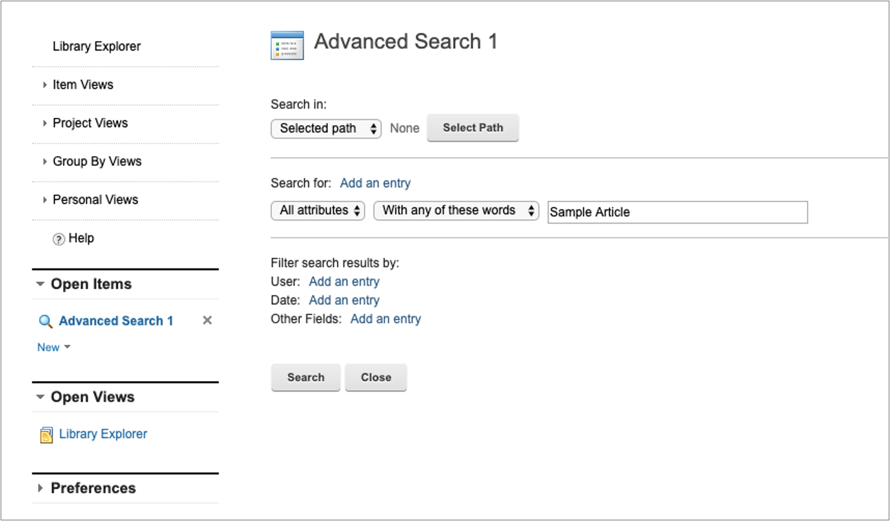

Query parameters
The following parameters can be used with queries.
| Parameter | Details and examples of parameters that can be added to queries |
|---|---|
namelikeignorecase |
This parameter is used as a wildcard query for items with names like the specified namelike parameter. It ignores the case of the string. For example: ?namelikeignorecase=nameApproxValue% <br/>\Note: Libraries cannot be queried by using this parameter. |
titlelikeignorecase |
This parameter is used as a wildcard query for items with titles like the specified titlelike parameter. It ignores the case of the string. For example:?titlelikeignorecase=nameApproxValue% |
titleornamelike |
If this parameter is set instead of merging titlelike and namelike via an AND condition it will be merged via an OR condition. |
| Parameter | Details and examples of parameters that can be added to queries |
|---|---|
textcontains: Any of the words |
This API lets Content Authors search for free form text in the Web Content Manager JCR. Sample URL: http://host:port/wps/mycontenthandler/wcmrest/query?textcontains=... |
textcontainsexact: Exact phrase |
This API lets Content Authors search for an exact match of text in the Web Content Manager JCR. Sample URL: http://host:port/wps/mycontenthandler/wcmrest/query?textcontainsexact=... |
| Parameter | Details and examples of parameters that can be added to queries |
|---|---|
approver |
This parameter is used to query items with a specific approver. A user ID must be specified when this parameter is used. For example: ?approver=userid |
authoringtemplateid |
This parameter is used to query items with a specific authoring template ID. For example: ?authoringtemplateid=wcmrest:18cfc80c-a490-4d75-9057-fed3db89de53 |
author |
This parameter is used to query items with a specific author. A user UID must be specified when this parameter is used. For example: ?author=uid=WCMUT_Editor_A,o=defaultWIMFileBasedRealm |
notauthor |
This parameter is used to query items without a specific author. A user UID must be specified when this parameter is used. For example: ?notauthor=uid=WCMUT_Editor_A,o=defaultWIMFileBasedRealm |
categoryid |
This parameter is used to query items with a specific category ID. For example: ?categoryid=wcmrest:18cfc80c-a490-4d75-9057-fed3db89de53 |
createdafter |
This parameter is used to query items that are created after a specific date and time. For example: ?createdafter=2011-01-11T11:43:29.0150Z |
createdbefore |
This parameter is used to query items that are created before a specific date and time. For example: ?createdbefore=2011-01-11T11:43:29.0150Z |
creator |
This parameter is used to query items with a specific creator. A user UID must be specified when this parameter is used. For example: ?creator=uid=WCMUT_Editor_A,o=defaultWIMFileBasedRealm |
dateformat |
This parameter is used to define the date format of query parameters. For example: ?dateformat=mm-dd-yyyy&createdbefore=12-31-2011If a date format not specified, then the default format yyyy-MM-dd'T'HH:mm:ssz is used. |
depth |
This parameter is used with the parentid and is used to define whether to search for all descendants of a parent, or just the immediate children of a parent item. For example, to query only the immediate children of an item, you add &depth=CHILDREN to the query: ?parentid=wcmrest:18cfc80c-a490-4d75-9057-fed3db89de53&depth=CHILDREN<br/>\ To query all descendants of an item, you add &depth=DESCENDANTS to the query: ?parentid=wcmrest:18cfc80c-a490-4d75-9057-fed3db89de53&depth=DESCENDANTS |
expireafter |
This parameter is used to query items that are expired after a specific date and time. For example: ?expireafter=2011-01-11T11:43:29.0150Z |
expirebefore |
This parameter is used to query items that were expired before a specific date and time. For example: ?expirebefore=2011-01-11T11:43:29.0150Z |
filteraccess |
This parameter is used to filter access control roles using the WCM Query API. All other parameters like parentid or type still apply, so one can, for example, find all libraries the user has the Editor role on. Valid roles: User, Editor, Admin, Manager, Contributor. For example: ?filteraccess=Contributor |
id |
This parameter is used to query an item with a specific ID. For example: ?id=wcmrest:18cfc80c-a490-4d75-9057-fed3db89de53<br/>\ |
keyword |
This parameter is used to query items that are profiled with a specific keyword. For example: ?keyword=keywordValue<br/>\ |
lastmodifiedafter |
This parameter is used to query items that were last modified after a specific date and time. For example: ?lastmodifiedafter=2011-01-11T11:43:29.0150Z<br/>\ |
lastmodifiedbefore |
This parameter is used to query items that were last modified before a specific date and time. For example: ?lastmodifiedbefore=2011-01-11T11:43:29.0150Z |
lastmodifier |
This parameter is used to query items that were last modified by a specific user. A user UID must be specified when this parameter is used. For example: ?lastmodifier=uid=WCMUT_Editor_A,o=defaultWIMFileBasedRealm |
libraryid |
This parameter is used to query items that are stored in a specific library. For example: ?libraryid=wcmrest:18cfc80c-a490-4d75-9057-fed3db89de53 |
namelike |
This parameter is used as a wildcard query for items with names like the specified namelike parameter. For example: ?namelike=nameApproxValue% Note: Libraries cannot be queried by using this parameter. |
name |
This parameter is used to query an item with a specific name. For example: ?name=nameValue Note: Libraries cannot be queried by using this parameter. |
owner |
This parameter is used to query items with a specific owner. A user UID must be specified when this parameter is used. For example: ?owner=uid=WCMUT_Editor_A,o=defaultWIMFileBasedRealm |
notowner |
This parameter is used to query items without a specific owner. A user UID must be specified when this parameter is used. For example: ?notowner=uid=WCMUT_Editor_A,o=defaultWIMFileBasedRealm |
pagesize |
This parameter is used to restrict the number of items that are returned by a query to a set number. It can be used with the page parameter to return specific pages of results. For example, to restrict the number of queries to be returned to 5: ?type=PresentationTemplate&pagesize=5 |
page |
This parameter is used with the pagesize parameter to define what set of results to display. For example, if pagesize is set to 5, and the page parameter is set to 2, then only results 6 - 10 are displayed. For example: ?type=PresentationTemplate&pagesize=5&page=2 |
parentid |
This parameter is used to query items that are the children of a specific parent item. For example: ?parentid=wcmrest:18cfc80c-a490-4d75-9057-fed3db89de53You can use the depth parameter to define whether to search for all descendants of a parent, or just the immediate children of a parent item. |
projectid |
This parameter is used to query items that are linked to a specific project. For example: ?projectid=wcmrest:18cfc80c-a490-4d75-9057-fed3db89de53 |
projectstate |
This parameter is used to query items that are linked to a project with a specific state. Refer to the following documentation for the different values you can use for the projectstate parameter: Project StatesThe following values can be used with this parameter: - ACTIVE - SYNDICATING- REVIEW- PENDING- PUBLISHING- PUBLISHED_FAILED- PUBLISHEDFor example, to query items that are linked to projects with a state of "ACTIVE" you would use the following query: ?projectstate=ACTIVE |
publishafter |
This parameter is used to query items that are published after a specific date and time. For example: ?publishafter=2011-01-11T11:43:29.0150Z |
publishbefore |
This parameter is used to query items that were published before a specific date and time. For example: ?publishbefore=2011-01-11T11:43:29.0150Z |
sort |
The sort parameter is appended to queries to determine how query results are sorted. The following values can be used with the sort parameter.- author- created- modified- name- title- parents- positionThe values _ascending or _descending are appended to the query to determine sort order.For example, to sort a presentation template query in ascending order of creation, you would use: ?type=PresentationTemplate&sort=created_ascending To sort a presentation template query in descending order of creation, you would use: ?type=PresentationTemplate&sort=created_descending If _ascending or _descending are not specified, the results as displayed in ascending order. |
state |
This parameter is used to query items that are in a specific state. The following values can be used with this parameter: - DRAFT - PUBLISHED - EXPIRED For example: ?state=PUBLISHED |
titlelike |
This parameter is used as a wildcard query for items with titles like the specified titlelike parameter. For example: ?titlelike=nameApproxValue% |
title |
This parameter is used to query an item with a specific title. For example: ?title=titleValue |
type |
This parameter is used to query items of a specific item type. For example, to query a list of components: ?type=LibraryHTMLComponent |
workflowid |
This parameter is used to query items that use a specific workflow. For example: ?workflowid=wcmrest:8d25860b-7a5c-4015-9cd5-bdcc60ce14bb |
workflowstageid |
This parameter is used to query items that are currently active within a specific workflow stage. For example: ?workflowstageid=wcmrest:18cfc80c-a490-4d75-9057-fed3db89de53 |
How to use multiple parameters
-
Multiple instances of the same parameter type in a query can be specified only as "OR" queries, with the following exceptions:
-
Only one value allowed
Only one instance of the following parameters can be used in a single query. If multiple instances are used, only the first instance is used by the query:
categoryiddateformatdepthpagepagesize- "AND" queries allowed
The following queries can be used as "AND" queries:
createdaftercreatedbeforeexpireafterexpirebeforelastmodifiedafterlastmodifiedbeforepublishafterpublishbeforeauthorowner
Note
The
authorandownerqueries can be used as "OR" queries if the request URL parameteroption=search-anyis used. For example, if a query specifies:?author=user1&author=user2&option=search-anythen all items that have user1 or user2 as their author are returned in the results. If the option parameter is not used, then only items that have both user1 and user2 as the author are returned.
-
Sort values
Sort values are comma-separated. For example:
?sort=created_ascending,title_descending
-
Text Search REST API
This API lets Content Authors search for free form text in the Web Content Manager JCR. It is equivalent to the functionality in the Web Content Manager user interface:

Using the Text Search REST API
The existing search query API is extended and two new parameters are added. See REST Query service for web content and Table 2 for more information.
-
Endpoint
GET request to:
http://host:port/wps/mycontenthandler/wcmrest/query?textcontainsexact=...or
http://host:port/wps/mycontenthandler/wcmrest/query?textcontains=...Sample URL:
http://samplehost.team-q-dev.com:10039/wps/mycontenthandler/!ut/p/digest!2fHfKIZpm7_8BPtgSigLeg/wcmrest/query?textcontainsexact=Sample%20Article -
Expected Body
Body can just have the basic WCM structure:
http://samplehost.team-q-dev.com:10039/wps/mycontenthandler/!ut/p/digest!2fHfKIZpm7_8BPtgSigLeg/wcmrest/query?textcontainsexact=Sample%20Article -
Expected Headers
LTPA token of the user. Also works anonymously.
-
Query Parameters
textcontains: Any of the wordstextcontainsexact: Exact phrase -
Return body
The found results. Same as when calling existing query API.
<?xml version="1.0" encoding="UTF-8"?><feed xmlns="http://www.w3.org/2005/Atom" xmlns:wcm="http://www.ibm.com/xmlns/wcm/8.0"> <id>wcmrest:query?textcontainsexact=Sample%20Article</id> <title>wcmrest:query?textcontainsexact=Sample%20Article</title> <updated>2020-04-14T12:36:14.477Z</updated> <total>2</total> <entry> <id>wcmrest:5bfbd4e2-f203-4912-87c2-4edd3e6fc4de</id> <title xml:lang="en">Sample Article 2</title> <wcm:displayTitle xml:lang="en">Sample Article 2</wcm:displayTitle> <summary xml:lang="en"></summary> <wcm:name>Sample Article 2</wcm:name> <wcm:type>Content</wcm:type> <updated>2020-04-14T12:30:05.676Z</updated> <wcm:lastModifier> <wcm:distinguishedName>uid=wpsadmin,o=defaultWIMFileBasedRealm</wcm:distinguishedName> <uri>/wps/mycontenthandler/!ut/p/digest!2fHfKIZpm7_8BPtgSigLeg/um/users/profiles/Z9eAeIHO0JPO64BPIJM4CPHDAMMG65JO6MM07GHO0JMOCHHC43IH6OPC63RS6M1</uri> <name>wpsadmin</name> </wcm:lastModifier> <link rel="edit" href="/wps/mycontenthandler/!ut/p/digest!2fHfKIZpm7_8BPtgSigLeg/wcmrest/Content/5bfbd4e2-f203-4912-87c2-4edd3e6fc4de" xml:lang="en" label="Edit"/> <link rel="alternate" href="/wps/mycontenthandler/!ut/p/digest!2fHfKIZpm7_8BPtgSigLeg/wcmrest/Content/5bfbd4e2-f203-4912-87c2-4edd3e6fc4de" xml:lang="en" label="Read"/> <link rel="library" href="/wps/mycontenthandler/!ut/p/digest!2fHfKIZpm7_8BPtgSigLeg/wcmrest/Library/f2a3c1ee-591d-4fe1-85d5-7d27662154a5" xml:lang="en" label="Library"/> <link rel="preview" href="/wps/poc/!ut/p/digest!2fHfKIZpm7_8BPtgSigLeg/wcm/oid:5bfbd4e2-f203-4912-87c2-4edd3e6fc4de" xml:lang="en" label="Preview"/> <category scheme="wcmrest:workflowState" term="PUBLISHED" label="Published" xml:lang="en"/> </entry> <entry> <id>wcmrest:2209b125-a9b3-4f2a-811f-4a297017dc9e</id> <title xml:lang="en">Sample Article</title> <wcm:displayTitle xml:lang="en">Sample Article</wcm:displayTitle> <summary xml:lang="en"></summary> <wcm:name>Sample Article</wcm:name> <wcm:type>Content</wcm:type> <updated>2020-04-14T11:44:10.229Z</updated> <wcm:lastModifier> <wcm:distinguishedName>uid=wpsadmin,o=defaultWIMFileBasedRealm</wcm:distinguishedName> <uri>/wps/mycontenthandler/!ut/p/digest!2fHfKIZpm7_8BPtgSigLeg/um/users/profiles/Z9eAeIHO0JPO64BPIJM4CPHDAMMG65JO6MM07GHO0JMOCHHC43IH6OPC63RS6M1</uri> <name>wpsadmin</name> </wcm:lastModifier> <link rel="edit" href="/wps/mycontenthandler/!ut/p/digest!2fHfKIZpm7_8BPtgSigLeg/wcmrest/Content/2209b125-a9b3-4f2a-811f-4a297017dc9e" xml:lang="en" label="Edit"/> <link rel="alternate" href="/wps/mycontenthandler/!ut/p/digest!2fHfKIZpm7_8BPtgSigLeg/wcmrest/Content/2209b125-a9b3-4f2a-811f-4a297017dc9e" xml:lang="en" label="Read"/> <link rel="library" href="/wps/mycontenthandler/!ut/p/digest!2fHfKIZpm7_8BPtgSigLeg/wcmrest/Library/f2a3c1ee-591d-4fe1-85d5-7d27662154a5" xml:lang="en" label="Library"/> <link rel="preview" href="/wps/poc/!ut/p/digest!2fHfKIZpm7_8BPtgSigLeg/wcm/oid:2209b125-a9b3-4f2a-811f-4a297017dc9e" xml:lang="en" label="Preview"/> <category scheme="wcmrest:workflowState" term="PUBLISHED" label="Published" xml:lang="en"/> </entry> </feed>
Getting only items that have a workflow with REST API search query results
You can filter the search results to only include items that have a workflow by specifying the options=has-workflow URL parameter.
Adding Workflow date fields and link to the REST API search query results
You can include the date fields associated with the workflow of a requested item by specifying the options=workflow URL parameter. Only the date fields that have been set to a valid value are returned. A link is also added to the workflow. This option is ignored for items that do not have a workflow. For example:
```
HTTP 1.1 GET /wps/mycontenthandler/wcmrest/query?name=SiteAreaName&options=workflow
<?xml version="1.0" encoding="UTF-8"?>
<entry xmlns="http://www.w3.org/2005/Atom" xmlns:wcm="http://www.ibm.com/xmlns/wcm">
...
<wcm:workflow>
<wcm:publishDate>2023-05-22T14:05:03.000Z</wcm:publishDate>
<wcm:expiryDate>2088-06-09T00:00:00.000Z</wcm:expiryDate>
<wcm:generalDateOne>1776-07-04T04:00:00.000Z</wcm:generalDateOne>
<wcm:generalDateTwo>2023-05-31T17:00:00.000Z</wcm:generalDateTwo>
</wcm:workflow>
…
<link rel="workflow" href="/wps/mycontenthandler/!ut/p/digest!eTdEthwoNryfHPt1e_NrWQ/wcmrest/Workflow/8e97997c-af7a-4aba-88c2-128f0f57c4f8" xml:lang="en" label="Workflow"/>
…
</entry>
```
Adding item path information to the REST API search query results
The parent path of a requested item can be included by specifying the options=item-path URL parameter. For example:
HTTP 1.1 GET /wps/mycontenthandler/wcmrest/query?type=SiteArea&options=item-path
<?xml version="1.0" encoding="UTF-8"?>
<entry xmlns="http://www.w3.org/2005/Atom" xmlns:wcm="http://www.ibm.com/xmlns/wcm">
...
<wcm:path>
<wcm:pathElement>
<wcm:title xml:lang="en">TestLibrary986182</wcm:title>
<wcm:name>testlibrary986182</wcm:name>
<wcm:link rel="alternate" href="/wps/mycontenthandler/!ut/p/digest!wT3bMC74Icsxn9xtTg_Fkw/wcmrest/Library/7cd8c331-59b7-4b3a-bfe9-9a57c44f67eb?locale=en&locale=ltr" xml:lang="en" label="Read"/>
</wcm:pathElement>
</wcm:path>
…
</entry>
The options=item-path URL parameter omits the parent preset folder that can be seen in the navigation breadcrumb trail of WCM Authoring when inspecting an item in a library. In the above example of a SiteArea, the Content folder is omitted and only the parent Library information is returned. To include the parent preset folder, use options=item-path-full as the URL parameter instead. For example:
HTTP 1.1 GET /wps/mycontenthandler/wcmrest/query?type=SiteArea&options=item-path-full
<?xml version="1.0" encoding="UTF-8"?>
<entry xmlns="http://www.w3.org/2005/Atom" xmlns:wcm="http://www.ibm.com/xmlns/wcm">
...
<wcm:path>
<wcm:pathElement>
<wcm:title xml:lang="en">TestLibrary986182</wcm:title>
<wcm:name>testlibrary986182</wcm:name>
<wcm:link rel="alternate" href="/wps/mycontenthandler/!ut/p/digest!wT3bMC74Icsxn9xtTg_Fkw/wcmrest/Library/7cd8c331-59b7-4b3a-bfe9-9a57c44f67eb?locale=en&locale=ltr" xml:lang="en" label="Read"/>
</wcm:pathElement>
<wcm:pathElement>
<wcm:title xml:lang="en">Content</wcm:title>
<wcm:name>Content</wcm:name>
<wcm:link rel="alternate" href="/wps/mycontenthandler/!ut/p/digest!wT3bMC74Icsxn9xtTg_Fkw/wcmrest/Folder/aec6c2b4-59be-4486-a8f6-77ad483f8ae9?locale=en&locale=ltr" xml:lang="en" label="Read"/>
</wcm:pathElement>
</wcm:path>
…
</entry>
Note
The options=item-path-full only works with the query API.
Adding more detailed information to the REST API search query results
Several other fields of a requested item can be included by specifying the options=details URL parameter. These include:
- the user who created the item
- the creation date
- if the item is a favorite
- if the item is locked
- an access control link that gets added to the links section
For example:
HTTP 1.1 GET /wps/mycontenthandler/wcmrest/query?type=SiteArea&options=details
<?xml version="1.0" encoding="UTF-8"?>
<entry xmlns="http://www.w3.org/2005/Atom" xmlns:wcm="http://www.ibm.com/xmlns/wcm">
...
<wcm:created>2023-07-11T18:11:24.122Z</wcm:created>
<wcm:creator>
<wcm:distinguishedName>uid=wpsadmin,o=defaultWIMFileBasedRealm</wcm:distinguishedName>
<uri>/wps/mycontenthandler/!ut/p/digest!kYNqh-e3k_yWjknyeEtGBA/um/users/profiles/Z9eAeNHD4JSK6KHOGJM8CGPO6MMG62JP0JM4CMHP2MMS6JPC63JT663CGJRG623</uri>
<name>wpsadmin</name>
<type>USER</type>
</wcm:creator>…
<link rel="access-control" href="/wps/mycontenthandler/!ut/p/digest!kYNqh-e3k_yWjknyeEtGBA/ac/access:oid:Z6QReDe33CEJH96M9C2MMOC4RD6MMG64BPIJM8CM1E6MMCCGHC2JS47K9D0JQG6I1" xml:lang="en" label="Access Control"/>
<category scheme="wcmrest:favorite" term="false" xml:lang="en"/>
<category scheme="wcmrest:locked" term="false" label=""/>
</entry>
To also include the list of owners of an item along with all the other details listed above, use options=details-full as the URL parameter instead. For example:
HTTP 1.1 GET /wps/mycontenthandler/wcmrest/query?type=SiteArea&options=details-full
<?xml version="1.0" encoding="UTF-8"?>
<entry xmlns="http://www.w3.org/2005/Atom" xmlns:wcm="http://www.ibm.com/xmlns/wcm">
...
<wcm:owner>
<wcm:distinguishedName>uid=wpsadmin,o=defaultWIMFileBasedRealm</wcm:distinguishedName>
<uri>/wps/mycontenthandler/!ut/p/digest!kYNqh-e3k_yWjknyeEtGBA/um/users/profiles/Z9eAeNHD4JSK6KHOGJM8CGPO6MMG62JP0JM4CMHP2MMS6JPC63JT663CGJRG623</uri>
<name>wpsadmin</name>
<type>USER</type>
</wcm:owner>
<wcm:created>2023-07-11T18:11:24.122Z</wcm:created>
<wcm:creator>
<wcm:distinguishedName>uid=wpsadmin,o=defaultWIMFileBasedRealm</wcm:distinguishedName>
<uri>/wps/mycontenthandler/!ut/p/digest!kYNqh-e3k_yWjknyeEtGBA/um/users/profiles/Z9eAeNHD4JSK6KHOGJM8CGPO6MMG62JP0JM4CMHP2MMS6JPC63JT663CGJRG623</uri>
<name>wpsadmin</name>
<type>USER</type>
</wcm:creator>…
<link rel="access-control" href="/wps/mycontenthandler/!ut/p/digest!kYNqh-e3k_yWjknyeEtGBA/ac/access:oid:Z6QReDe33CEJH96M9C2MMOC4RD6MMG64BPIJM8CM1E6MMCCGHC2JS47K9D0JQG6I1" xml:lang="en" label="Access Control"/>
<category scheme="wcmrest:favorite" term="false" xml:lang="en"/>
<category scheme="wcmrest:locked" term="false" label=""/>
…
</entry>
Note
The options=details-full only works with the query API.